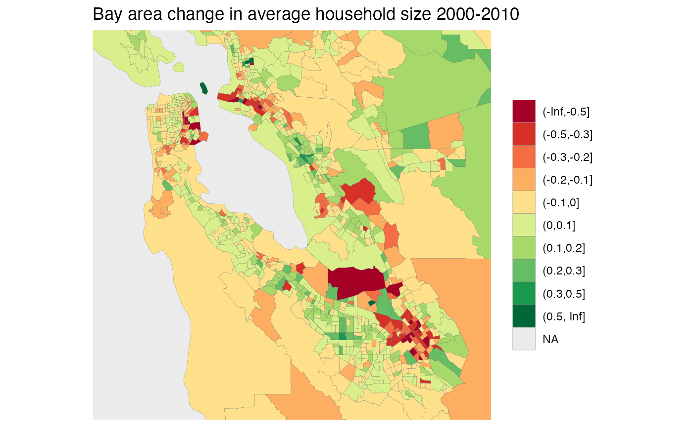

As an example we will explore changing household size between the 2000 and 2010 US census. First we need to build the metadata for our variables “H011001” for population and “H013001” for households.
variables=c(population="H011001",households="H013001")
meta <- c(2000,2010) %>%
lapply(function(year){
v <- variables %>% setNames(paste0(names(.),"_",year))
meta_for_additive_variables(paste0("dec",year),v)
}) %>%
bind_rows()
meta
#> # A tibble: 4 × 8
#> variable dataset label type aggregation rule geo_dataset parent
#> <chr> <chr> <chr> <chr> <chr> <chr> <chr> <lgl>
#> 1 H011001 dec2000 population_2000 Manual Additive Additi… dec2000 NA
#> 2 H013001 dec2000 households_2000 Manual Additive Additi… dec2000 NA
#> 3 H011001 dec2010 population_2010 Manual Additive Additi… dec2010 NA
#> 4 H013001 dec2010 households_2010 Manual Additive Additi… dec2010 NAArmed with that we can call get_tongfen_us_census to
request the data on a common geography based on census tracts and
compute the change in household size.
census_data <- get_tongfen_us_census(regions = list(state="CA"), meta=meta, level="tract") %>%
mutate(change=population_2010/households_2010-population_2000/households_2000)
census_data %>% names()
#> [1] "TongfenID" "TongfenUID" "geometry" "population_2000"
#> [5] "households_2000" "population_2010" "households_2010" "change"We bin the data for better plotting and zoom in on the Bay area.
census_data %>%
mutate(c=cut(change,c(-Inf,-0.5,-0.3,-0.2,-0.1,0,0.1,0.2,0.3,0.5,Inf))) %>%
ggplot() +
geom_sf(aes(fill=c), size=0.05) +
scale_fill_brewer(palette = "RdYlGn") +
labs(title="Bay area change in average household size 2000-2010", fill=NULL) +
#geom_water() + geom_roads() +
coord_sf(datum=NA,xlim=c(-122.6,-121.7),ylim=c(37.2,37.9))